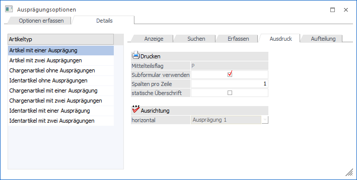
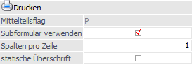
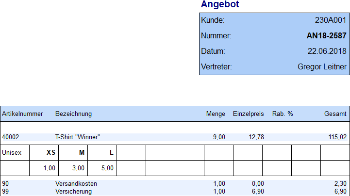
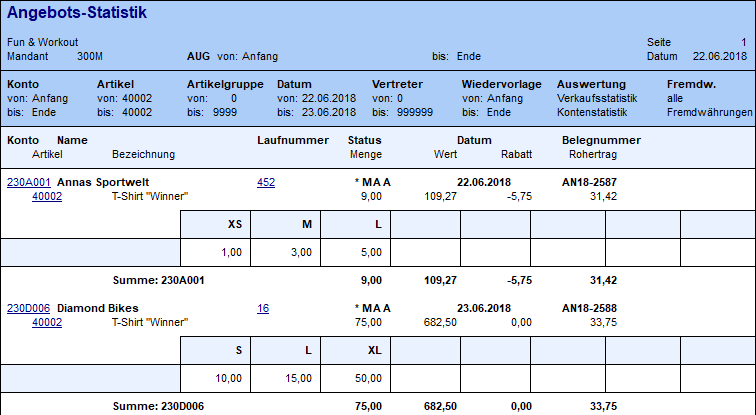
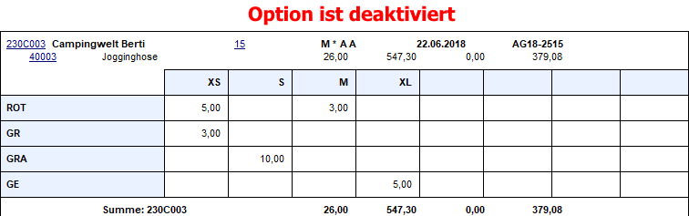
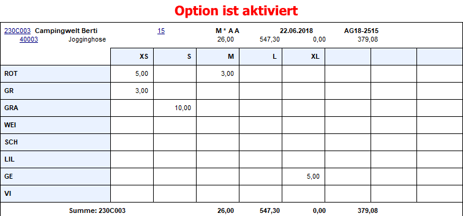
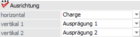
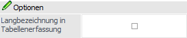
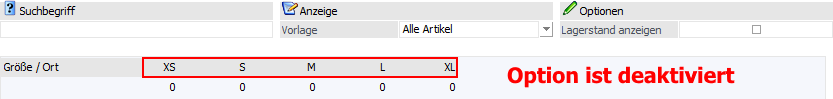
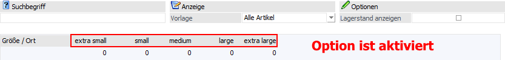

In dem Unterregister "Ausdruck" kann u.a. pro Artikeltyp hinterlegt werden, wie der Ausdruck von Ausprägungen erfolgen soll.


Ø Mittelteilsflag
Bei dem Druck eines Belegs werden die Informationen von Artikeln (Artikelnummer, Bezeichnung, Menge, Preis, etc.) mit Hilfe des Flags "N" (internes Steuerungselement im Formulareditor) gedruckt.
Durch die Aktivierung der Option "Subformular verwenden" wird bei Ausprägungsartikeln nicht mehr das Flag "N", sondern das hier dargestellte Flag genutzt, welches pro Artikeltyp unterschiedlich ist.
Hinweis
Bei diesem Flag (z.B. "P" für den Artikeltyp "Artikel mit einer Ausprägung") muss das Subformular (ein Formular im Formular), welches in der Folge für den Druck der Ausprägungen zuständig ist, hinterlegt werden.
Ø Subformular verwenden
Durch Aktivieren dieser Option kann bestimmt werden, dass bei dem Belegdruck ein Subformular verwendet werden soll, wodurch Ausprägungsartikel in einer bestimmten Art und Weise gedruckt werden können. Hierdurch kann z.B. erreicht werden, dass Artikel mit zwei Ausprägungen (Größen und Farben) in Rasterform ausgedruckt werden.
Hinweis
Diese Einstellung wirkt sich nicht nur auf den Belegdruck, sondern auch auf weitere WinLine FAKT Auswertungen aus. Im Gegensatz zu den Belegformularen gibt es dort allerdings nur ein Flag über welches alle Artikeltypen gedruckt werden und wo somit das Subformular zu hinterlegen ist. Dieses betrifft folgende Auswertungen (Formulare):
ü Backlog (P02W1372)
ü Packliste (P02W225)
ü Artikelliste (P02W224A2)
ü Bedarfsliste (P99W113)
ü Artikelinfo (P99W110)
Beispiel "Belegdruck"

Beispiel "Backlog"

Achtung
Beim Ausdruck von Ausprägungen mit SUB-Formularen wird in der Hauptartikelzeile die Summe (Gesamtwert) der Ausprägungszeilen und nicht der Wert der Hauptartikelzeile angedruckt.
Ø Spalten/Zeile
In diesem Feld kann angegeben werden, wie viele Spalten einer Ausprägung in einer Zeile gedruckt werden sollen. Es können max. 50 Spalten pro Zeile gedruckt werden, wobei die Anzahl allerdings auch abhängig von dem Aufbau des verwendeten Subformulars ist.
Ø Statische Überschrift
Ist diese Option aktiviert, so werden immer alle angelegten Ausprägungsüberschriften angedruckt, unabhängig davon, ob die entsprechende Ausprägung im Beleg verwendet wurde oder nicht. Ist die Checkbox inaktiv, werden nur die Ausprägungsüberschriften angedruckt, die auch bei der Belegbearbeitung verwendet wurden.
Hinweis
Diese Option steht nur bei den Artikeltypen "Artikel mit einer Ausprägung" und "Artikel mit zwei Ausprägungen zur Verfügung.
Beispiel


Ausrichtung

Ø horizontal / vertikal 1 / vertikal 2
In diesen 3 Spalten kann angegeben werden welche Dimension horizontal oder vertikal im Subformular angedruckt werden soll. Je nach Artikeltyp können folgende Einstellungen vorgenommen werden:
ü Artikel mit einer
Ausprägung
Hier kann keine Änderung vorgenommen werden; die Gruppe
"Ausprägung1" wird immer horizontal angedruckt.
ü Artikel mit 2 Ausprägungen
Hier
können Ausprägung1 und Ausprägung2 wahlweise horizontal oder vertikal angedruckt
werden. Standardmäßig wird Ausprägung1 horizontal und die Ausprägung2 vertikal
angedruckt.
ü Chargen- oder Identartikel ohne
Ausprägungen
Hier kann keine Änderung vorgenommen werden; die Chargen- oder
Identnummer wird immer horizontal angedruckt.
ü Chargen- oder Identartikel mit 1
Ausprägung
Hier können Ausprägung1 und die Chargen-/Identnummer wahlweise
horizontal oder vertikal angedruckt werden. Standardmäßig wird die
Chargen-/Identnummer horizontal und Ausprägung1 vertikal angedruckt.
ü Chargen- oder Identartikel mit 2
Ausprägungen
Hier können Ausprägung1, Ausprägung2 und die
Chargen-/Identnummer wahlweise horizontal oder vertikal angedruckt werden.
Standardmäßig wird die Chargen-/Identnummer horizontal, und vertikal zuerst
Ausprägung1 und dann Ausprägung2 angedruckt.
Hinweis
Eine Dimension darf bei einem Artikeltyp nicht mehrfach zugeordnet werden. Sollte dieses geschehen sein, dann wird hierauf beim Abspeichern hingewiesen.
Optionen

Ø Langbezeichnung in Tabellenerfassung
Bei Aktivierung dieser Option wird in dem Register "Tabelle" des Fensters "Ausprägungen erfassen" anstatt des Kurzcodes die Bezeichnung bei den Ausprägungen angezeigt.
Beispiel

